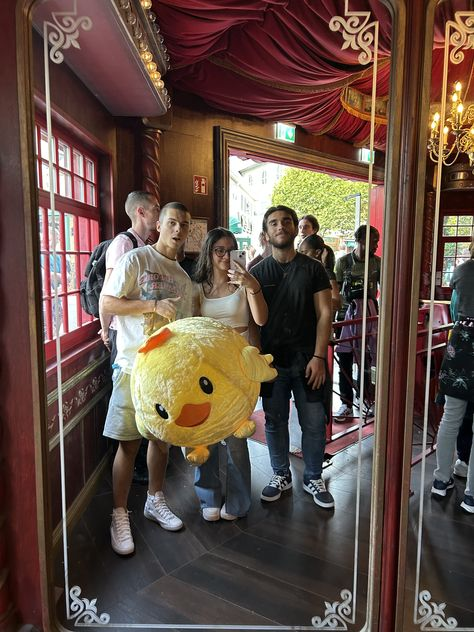
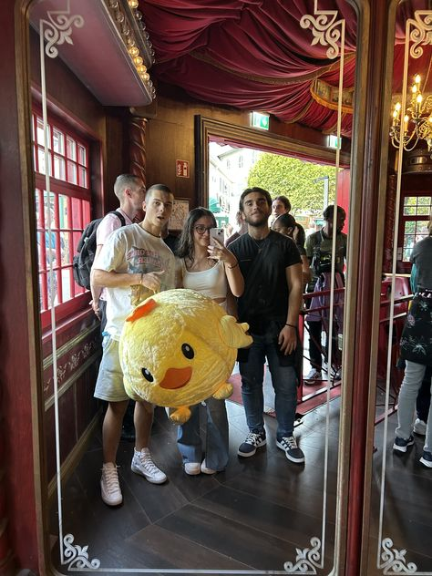

Near to the skies and not just,Fatimakapelle Furtwangen
by Saad
If you want to take a break after an extensive study day at the uni, don't panic, rather prepare yourself for a nice mini hike for some most scenic view right on the up hill of our own Furtwangen.
Whether you're a coffee person or a casual explorer of the nature, Chapel is the place for any kind of person. You want to sit on a bench and read your favourite book or either take some Vitamin-D laying on the lucky days there is sun, Chapel got you. Going to chapel can also a be seen as a spiritual jouney and not just a place to go and hangout with friends.
One of the best thing of Chapel? The view, of course but his strategic position and the Chapel facing towards the city of Furtwangen, just makes it even more better. By sitting at the chapel while drinking your coffee you can see if your bus already arrived at Rößleplatz or if the lidl is still open.You can see lights f the mosque on,kids playing in the park and people going in and out of the gym.Chapel offers many different views of the city from one place!
Fatimakapelle can be visited year-round, with each season bringing its own magic and difficulties to reach up. In the summer, perfect Sun giving a golden and brightest light into the forest and perfect weather for some outdoor picnic with friends or watching sunset with some drinks or homemade tacos for dinner but eaten "with a view" at the Chapel. As winter arrives,from chapel you could observe a touch of fairy-tale town with Furtwangen covered in white snow, which nevertheless is an eye-pleasent view to drink some hot chocolate with your friends or people who visits Furtwangen and want to see how small is the whole town but a loving home to many of us.
There is no ticket price to access the Chapel so student-friendly and do visit any time you feel as its 24/7 open

 
